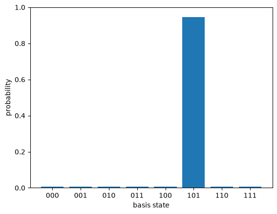
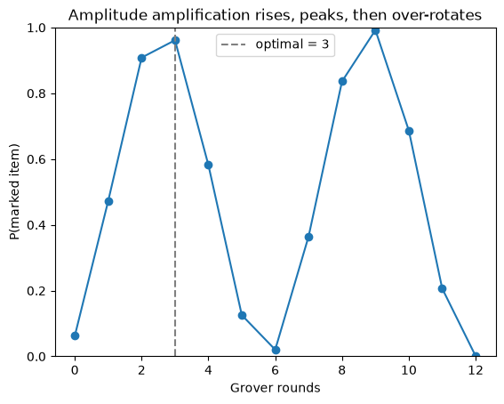

Deutsch-Jozsa and Bernstein-Vazirani solved artificial promise problems. Grover’s algorithm solves a real one: find the single marked item in an unstructured set of $N$ possibilities. A phone book sorted by name is structured, you can binary search it. A phone book where you want the one entry with a given number is not, and classically you have no choice but to check entries one at a time, $N/2$ on average. Grover finds it in about $\sqrt{N}$ steps. It is not exponential speedup, but it is provable, general, and a clean place to watch interference work as a slow rotation toward the answer.
import numpy as np
import matplotlib.pyplot as plt
from qfs import gates
from qfs.statevector import StateVector
from qfs import viz
from qfs.algorithms.grover import grover_search, optimal_iterations, diffusion
from qfs.algorithms.oracles import phase_oracle
The two operators
Grover needs two ingredients, and qfs builds both as explicit matrices.
The oracle marks the answer by flipping the sign of its amplitude and leaving every other amplitude alone. It is the identity with a single $-1$ on the diagonal, at the marked index. Notice it does nothing you could detect by measuring right after: flipping a sign does not change any probability. The information is in the phase, waiting to be turned into amplitude.
oracle = phase_oracle(marked=5, n=3)
np.diag(oracle).real # all +1 except a single -1 at index 5
array([ 1., 1., 1., 1., 1., -1., 1., 1.])
The diffusion operator is inversion about the mean: it reflects every amplitude through the average amplitude. Written out it is $2|s\rangle\langle s| - I$, where $|s\rangle$ is the uniform superposition. On its own it does nothing useful. Paired with the oracle, each round nudges amplitude off the unmarked states and onto the marked one.
D = diffusion(3)
np.allclose(D @ D.conj().T, np.eye(8)) # it is unitary
True
One run
Start from the uniform superposition, apply the oracle then the diffusion a fixed
number of times, and measure. grover_search does the loop and returns the final
state. With three qubits there are eight items, and the right number of rounds is
small.
n = 3
print("optimal rounds for n=3:", optimal_iterations(n))
state = grover_search(marked=5, n=n)
print("P(marked) =", state.probabilities()[5].round(4))
_ = viz.plot_probabilities(state)
optimal rounds for n=3: 2
P(marked) = 0.9453

Almost all of the probability is now sitting on item 5, from a start where all eight items were equally likely. Sampling the final state returns the answer nearly every time.
counts = grover_search(marked=5, n=n, rng=np.random.default_rng(0)).sample(1000)
print(dict(sorted(counts.items(), key=lambda kv: -kv[1])))
{'101': 948, '001': 11, '000': 9, '011': 8, '110': 8, '111': 7, '010': 6, '100': 3}
You can over-rotate
Here is the part that surprises people coming from classical search, where more work never hurts. Each Grover round rotates the state by a fixed angle in a two dimensional plane spanned by “the marked state” and “everything else.” The probability of the marked item is the square of a sine of that angle, so it rises, peaks, and then falls if you keep going. More iterations is not better. There is a right number, and overshooting walks back past the answer.
Watch it directly: the probability of the marked item as a function of how many rounds we run, for four qubits (sixteen items).
n = 4
marked = 11
rounds = range(0, 13)
prob = [grover_search(marked, n, iterations=k).probabilities()[marked] for k in rounds]
fig, ax = plt.subplots()
ax.plot(list(rounds), prob, marker="o")
ax.axvline(optimal_iterations(n), color="gray", linestyle="--", label=f"optimal = {optimal_iterations(n)}")
ax.set_xlabel("Grover rounds")
ax.set_ylabel("P(marked item)")
ax.set_title("Amplitude amplification rises, peaks, then over-rotates")
ax.set_ylim(0, 1)
ax.legend()
plt.show()

The first peak is at the dashed line, $\lfloor \frac{\pi}{4}\sqrt{N} \rfloor$ rounds. Run that many and the marked item is almost certain. Run twice as many and you have rotated past it, back toward the noise. Keep going and the rotation comes around again, so the curve peaks periodically, but every later peak costs several times the rounds for the same near-certainty. The whole algorithm is one slow, deliberate rotation, and the skill is stopping at the first top.
Where this leaves us
Grover is the geometric heart of quantum algorithms made visible: phases set by an oracle, turned into amplitude by a reflection, accumulated over $\sqrt{N}$ rounds. There is no parallel universe checking every answer at once. There is one vector being rotated toward the one you want.
Grover needed one trick: a phase flipped by an oracle, turned into amplitude by a reflection. The next three posts build a subtler instrument. The quantum Fourier transform reads periodic structure out of phases, phase estimation turns that readout into a measurement device, and Shor’s algorithm uses it to factor integers. That is the payoff of the pure-state arc. Density matrices, noise, and error correction come after, once we admit that real qubits leak into their environment.
Watch the Episode
This post is also a video episode: Grover's Search: Quadratic Speedup from Structured Interference, part of the series playlist.
Discussion